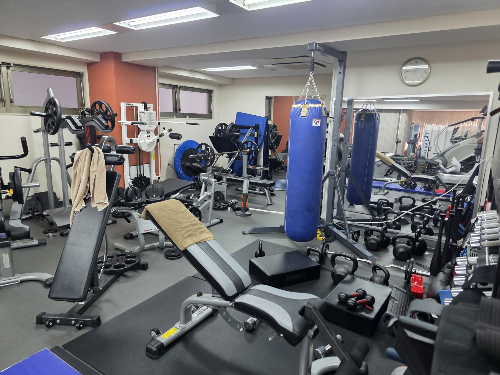

FOR THE NEXT 100 YEARS
100年後の 子どもたちに、 何を 残す？
20262126
LEAVE SOMETHING THAT LIVES ON.
生きた 証は、
誰かの 未来に 残せる。
02
THE FUTURE STARTS CLOSE TO HOME
増や したいのは、
こんな 何気ない 日常。
「これからの 暮らし、
話そうか。」
「大人に なるのが、
楽しみ。」
03
MAKE THE PURPOSE YOUR WORK
その 想いを、
仕事にする仕組みがある。
企業から、 社員と 家族へ。
地域に、 人生支援の 窓口を。
AIエンジニアの 仕事
つくる。
仕事内容を 知る
磨く。
仕事内容を 知る
04
BUILD THE NEXT CHAPTER
最初の 仕組みを
つくる 人に、
なろう。
自分の 工夫を、 全国の 当たり前へ。
経営の そばで、 判断力を 磨く。
実績から、 事業を 担う 役割へ。
あなた 自身の 未来も、
ここで 描こう。
05
LIVING OUR PURPOSE
人生支援は、
自分たちの 足元から。

ジムまで - 10秒
入会費 - 0円
月会費 - 0円
06
RECRUIT INFORMATION
AIエンジニアを、
正社員・インターンで 募集しています。
事業・ブランド - REALIZE OS
人生支援と 業務改善を つなぐ 事業 募集職種 AIエンジニア 募集の 種類 正社員／インターン 活かせる 領域 企画・開発 給与 正社員：固定給 30万円／月 インターンの 条件は 担当者へ ご確認ください。 勤務時間 月曜日〜金曜日 10時〜19時 勤務地 〒160-0022
東京都新宿区新宿1-36-7 新宿内野ビルⅡ選考で 大切に したい こと 人への 関心、 課題を 整理する 力、 学ぶ姿勢、 改善を 続ける力 電話番号 - 03-6380-5978
その他 詳細条件は 担当者へ ご確認ください。
CONTACT